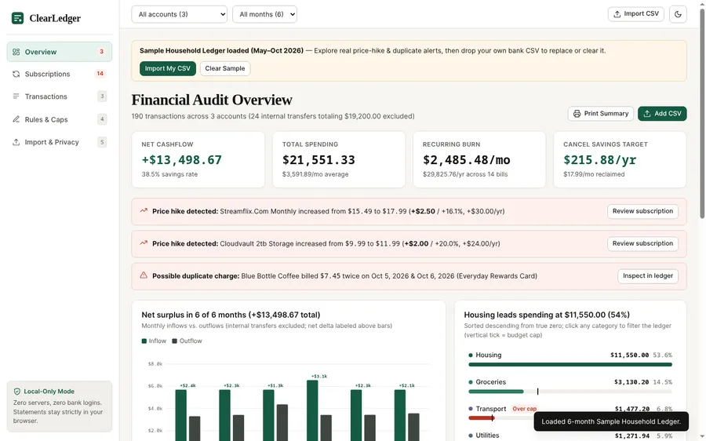

Most of these are small tools that run entirely in the browser or on my own machine. Some are finished, some are still prototypes, and each card says which. The flagship projects, DataSense Studio and the Culinary Intelligence Workbench, are on the main page.

Finance · Privacy-first
ClearLedger
Audit a bank or credit card CSV statement in the browser. It finds recurring subscriptions, silent price hikes, and duplicate charges, and lets you mark each one Keep, Review, or Cancel to see the yearly savings. No bank login and no upload: everything stays on your device.
Find the charges you forgot to stop. Drop in a bank or card export (CSV, OFX, QFX or QIF) and it lists what repeats, what quietly went up in price, and what was charged twice, then builds a cancel list with the yearly saving. Runs entirely in your browser.
A day-by-day utility bill splitter for households that change. It works out who was home each day and splits usage among the people present, handles different bills paid by different people, and produces a settlement down to the cent. Local-first, with no dependencies.
A free co-parenting calendar builder. Choose a custody rotation (2-2-3, alternating weeks, or a custom cycle), add holidays and swaps, and see a full year of overnights and handoffs, with per-parent .ics export and a printable planner. Static site with no account and no server. It is a planning aid, not legal advice.
An offline lesson-rehearsal tool for teachers. It listens as you deliver a lesson, spots logical leaps or unstated assumptions, and asks one short Socratic question aloud, like a curious student would. Speech, language model, and vision all run locally. Early-stage, with known rough edges.
Python · Local LLM (Ollama) · Speech-to-text · Computer vision
A native Rust desktop project for viewing and controlling displays across my own computers over Tailscale. The protocol, networking, and viewer pieces are written and tested in isolation. A full cross-machine session has not been verified yet, so it is not a finished product.
A privacy-first prototype that plans edits for talking-content videos in VEGAS Pro 17 using local transcription and a validated, ID-only edit plan. Milestone 1 runs offline end to end on a test clip. It does not edit VEGAS projects yet and I make no claim about edit quality.